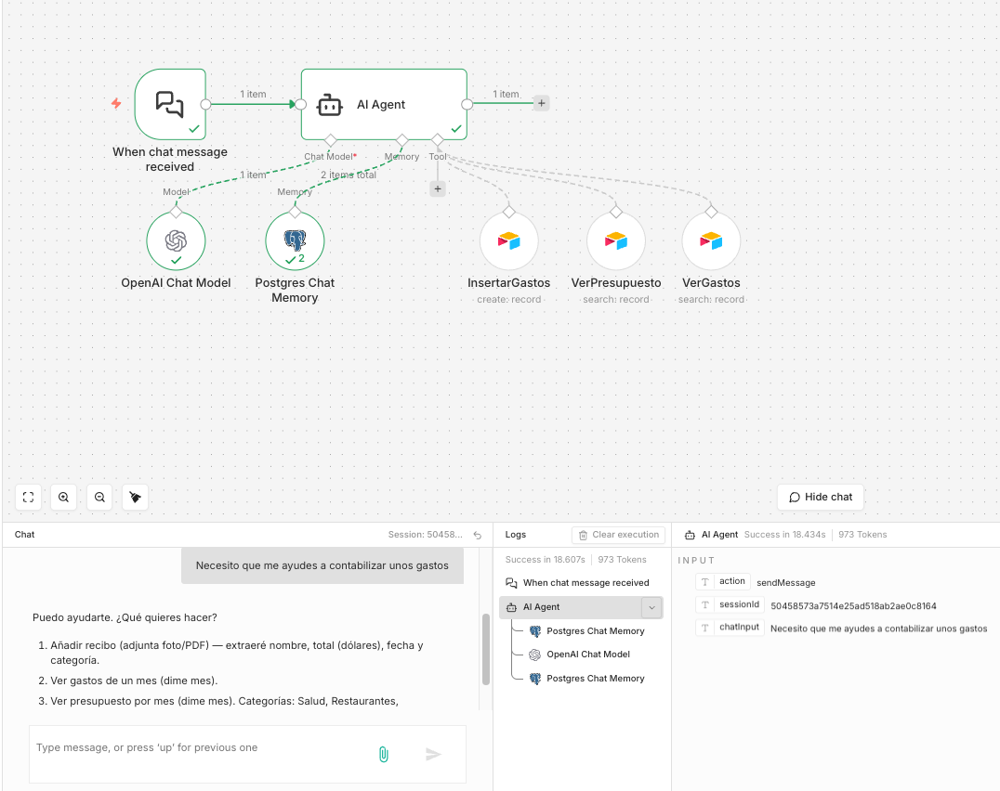

Objetivo
Construir un flujo conversacional útil para un caso real de finanzas personales, evitando una demo superficial y priorizando arquitectura, mantenibilidad y capacidad de extensión.
En este proyecto reconstruí y adapté un asistente financiero basado en agentes IA dentro de n8n, con memoria conversacional, herramientas conectadas a datos estructurados y capacidad para responder consultas, revisar presupuesto disponible e insertar nuevos movimientos desde una conversación natural. El interés del caso no está en “hacer un chatbot”, sino en diseñar una arquitectura clara: entrada conversacional, razonamiento del agente, persistencia de contexto y ejecución de acciones sobre sistemas externos.
Objetivo
Construir un flujo conversacional útil para un caso real de finanzas personales, evitando una demo superficial y priorizando arquitectura, mantenibilidad y capacidad de extensión.
Entregables
Workflow operativo en n8n + memoria conversacional persistente + tools conectadas a datos de gasto/presupuesto + base reutilizable para evolución futura a una solución más robusta.
Valor del caso
El proyecto demuestra cómo llevar un agente IA desde el prototipo conversacional a una solución conectada a datos reales, con criterio de arquitectura y lectura profesional.
Resumen ejecutivo
El flujo parte de un chat trigger en n8n y delega la interpretación de cada mensaje en un AI Agent. Ese agente decide si debe responder directamente o llamar a una herramienta concreta para consultar gastos, revisar presupuesto o registrar un nuevo movimiento. Para mantener coherencia entre mensajes, la memoria conversacional se persiste en PostgreSQL. La arquitectura es deliberadamente simple: separar conversación, memoria y tools permite explicar con claridad qué hace cada componente, reducir ambigüedad operativa y dejar una base limpia para una evolución posterior hacia SQL nativo, validaciones adicionales o una capa de reporting más avanzada.
Planteamiento
Problema a resolver
Decisiones técnicas
Lectura de portfolio
Arquitectura
La solución se organiza en capas sencillas y auditables. Esta separación permite razonar con facilidad sobre cada componente, detectar cuellos de botella y explicar el sistema con un lenguaje comprensible tanto para perfil técnico como para negocio.
Entrada conversacional
El chat trigger de n8n actúa como punto de entrada único. Cada mensaje del usuario se transforma en input del workflow y se entrega al agente con una estructura controlada.
Razonamiento del agente
El AI Agent interpreta la intención, evalúa si necesita datos externos y decide qué herramienta debe invocar. Esta capa evita lógica rígida basada solo en reglas y permite una interacción más natural.
Persistencia de contexto
La memoria en PostgreSQL permite continuidad entre mensajes, reduce repeticiones y mejora la coherencia de la conversación en escenarios donde el usuario formula preguntas encadenadas.
Capa de tools
Las herramientas separan claramente lectura e inserción de datos: consultar gastos, consultar presupuesto e insertar movimientos. Esto simplifica mantenimiento y facilita futuras migraciones de backend.
Buenas prácticas
Más allá de “hacerlo funcionar”, el proyecto se apoya en una serie de decisiones que mejoran su lectura técnica y su valor como pieza de portfolio.
Separación de responsabilidades
Mantenibilidad
Limitaciones actuales
Workflow · Arquitectura · Conversación
1) Workflow general
Vista completa del flujo en n8n: trigger, agente, modelo, memoria y herramientas conectadas.

2) Configuración del agente
Prompt, herramientas disponibles y lógica de decisión del nodo central del sistema.

3) Memoria y capa de datos
Persistencia del contexto conversacional y conexión con las tablas de gasto y presupuesto.

4) Chatbot en funcionamiento
Ejemplo de interacción real con el asistente: consulta, razonamiento y respuesta apoyada en tools.

Consulta de gasto
El agente puede recuperar movimientos registrados y responder preguntas sobre categorías, volumen acumulado o consumo reciente.
Seguimiento de presupuesto
La lógica permite contrastar lo presupuestado frente a lo ya gastado y devolver una lectura resumida y operativa para el usuario.
Inserción de movimientos
El flujo no se limita a consulta: puede registrar nuevos gastos, lo que lo convierte en un sistema transaccional sencillo y no solo en una capa de respuesta.
Stack técnico
Orquestación
n8n como plataforma de automatización y construcción del workflow principal.
IA y decisión
AI Agent + modelo LLM para interpretar intención, decidir uso de tools y generar respuesta final.
Persistencia
PostgreSQL / Supabase para la memoria conversacional del agente y continuidad entre sesiones.
Datos operativos
Airtable como almacenamiento estructurado de gastos y presupuestos en la versión original del proyecto.
Resultado técnico
El proyecto demuestra cómo pasar de un flujo experimental a una solución explicable, conectada a datos reales y suficientemente ordenada como para presentarse como caso técnico completo.
Lectura profesional
El valor principal no está en la interfaz, sino en la arquitectura: memoria, tools, persistencia y una lógica lo bastante clara como para ser mantenida, extendida y explicada.
Escalabilidad
La base admite evolución hacia SQL nativo, validaciones más estrictas, autenticación por usuario, observabilidad del workflow y una capa analítica adicional sobre las finanzas registradas.
Conclusión
Este caso resume una línea de trabajo que me interesa especialmente: combinar automatización, datos e IA aplicada a procesos concretos. El valor real aparece cuando el agente no solo conversa, sino que entiende intención, mantiene contexto y opera sobre sistemas externos de forma útil. Como proyecto de portfolio, me permite mostrar criterio técnico, enfoque de arquitectura y una aplicación práctica de agentes IA más allá de la demo.